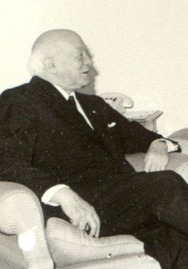

Henri Coandă
The first to recognize the practical application of a jet engine in aircraft design.

Henri Coandă at a meeting with Nicolae Ceaușescu in 1967
Short timeline of Henri Coandă life:
- 7 June 1886 - born in Bucharest, Romania
- 1903 - he graduated Military High School in Iaşi with the rank of sergeant major, and he continued his studies at the School of Artillery, Military, and Naval Engineering in Bucharest.
- 1905 - he built a missile-aeroplane for the Romanian Army.
- 1907–08 - continued his studies at the Montefiore Institute in Liège, Belgium, where he met Gianni Caproni. In 1908 Coandă returned to Romania to serve as an active officer in the Second Artillery Regiment. His inventor's spirit did not comport well with military discipline and he obtained permission to leave the army, after which he took advantage of his renewed freedom to take a long automobile trip to Isfahan, Teheran, and Tibet.
- 1909 - travelled to Paris, where he enrolled in the newly founded École Nationale Supérieure d'Ingénieurs en Construction Aéronautique (now the École Nationale Supérieure de l'Aéronautique et de l'Espace, also known as SUPAERO). One year later (1910) he graduated at the head of the first class of aeronautical engineers.
- 1910 - in the workshop of Gianni Caproni, he designed and built an aircraft known as the Coandă-1910, which he displayed publicly at the second International Aeronautic Salon in Paris that year. The aircraft used a 4-cylinder piston engine to power a rotary compressor which was intended to propel the craft by a combination of suction at the front and airflow out the rear instead of using a propeller.
- 1911-1914 - he worked as technical manager of the Bristol Aeroplane Company in the United Kingdom, where he designed several aeroplanes known as the Bristol-Coanda Monoplanes. In 1912 one of these aircraft won a prize at the British Military Aeroplane Competition.
- 1915 - he returned to France where, working during World War I for Delaunay-Belleville in Saint-Denis, he designed and built three different models of propeller aeroplane, including the Coandă-1916, with two propellers mounted close to the tail. This design was to be reprised in the 1950s Sud Aviation Caravelle transport aeroplane, for which Coandă was a technical consultant.
- World War II - Coanda spent World War II in occupied France where he worked for the Nazis to help their war effort by developing the turbopropulseur (turbopropeller) drive system from his 1910 biplane into a propulsion system for snow sleds. The German contract concluded after one year, yielding no plans for production.
- Later work - Coandă's research on the Coandă Effect was of interest post-war and became the basis for several investigations of entrained or augmented flow. A small stream of a high-velocity fluid could be used to generate a greater mass flow, at lower velocity. Although eventually unsuccessful for aircraft propulsion, this effect has been widely used on a smaller scale, from packaging machinery for small pills through to the Dyson Air Multiplier bladeless fan.
- 1969 - during the early years of the Ceauşescu era, he returned to spend his last days in his native Romania, where he served as director of the Institute for Scientific and Technical Creation.
- 1971 - reorganized, along with professor Elie Carafoli, the Department of Aeronautical Engineering of the Polytechnic University of Bucharest, spinning it off from the Department of Mechanical Engineering.
- 25 November 1972 - dies at the age of 86.
Honours and awards
- 1965: At the International Automation Symposium in New York, Coandă received the Harry Diamond Laboratories Award.
- He received an Honorary Fellowship of the Royal Aeronautical Society in 1971
- Bucharest's Henri Coandă International Airport is named after him
- Award and Grand Gold Medal "Vielles Tiges"
- UNESCO Award for Scientific Research
- The Medal of French Aeronautics, Order of Merit, and Commander ring